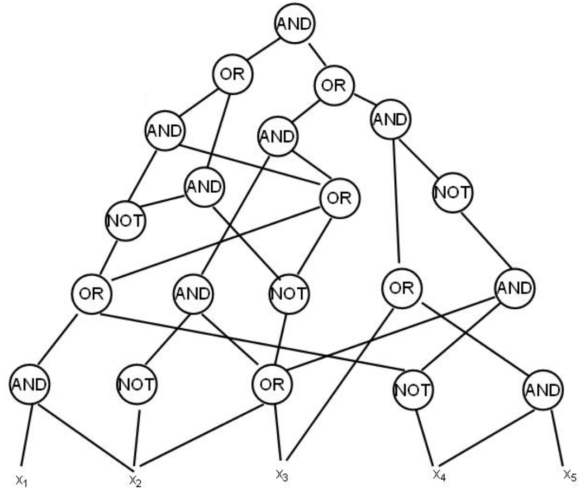

NP-полные задачи
Задача (полиномиально проверяемого) поиска задается предикатом $C(I, S)$, где $I$ -- условие задачи, $S$ -- решение. Условие на них: размер решения является полиномом от размера условия, существует алгоритм $A_C(I, S)$, который по данному условию и решению за полиномиальное время вычисляет $C(I, S)$ (т.е. правильное решение или нет). Поиск гамильтонова цикла -- пример такой задачи.
Класс таких задач называется NP.
Определение: класс задач поиска, для которых также существует полиномиальный алгоритм $B_C(I) \rightarrow S$, который по условию выдает решение за полиномиальное время называется P.
Отсюда очевидно вытекает, что $P \subseteq NP$.
Задача разрешения: задача, которая проверяет, существует ли такое $S$, что $C(I, S)$.
Утверждение: если научиться решать задачу разрешения, то тогда научимся решать задачу поиска, т.е. по $I$ находить $S$ за полином. Доказательство: Допустим, у нас есть алгоритм $H$, который для графа $G$ говорит, есть в нем гамильтонов цикл или нет. Допустим, что в $G$ цикл есть. Тогда выкинем из $G$ ребро $e$ и скормим это алгоритму:
- в графе без ребра цикл есть. Тогда это ребро циклу не принадлежит
- в графе без ребра цикла нет. Тогда это ребро принадлежит циклу. Эта штука называется сводимость.
Всякие NP-полные задачи
| NP-полная задача | Похожая задача, решать умеем |
|---|---|
| Гамильтонов путь/цикл | Эйлеров путь/цикл |
| Задача коммивояжера
Существует ли путь стоимости $\leq k$ ? |
Минимальное остовное дерево |
| Задача выполнимости (SAT)
Есть конъюнкция дизъюнктов от $n$ (КНФ) переменных, надо найти выполняющий набор переменых |
Выполнимость дизъюнктов Хорна
Формула с дизъюнктами размер $\leq 2$ (2-SAT) |
| 3-выполнимость (3-SAT)
Сложная, даже если любая переменная встречается $\geq 3$ раз |
|
| Раскраска графа в $k\geq 3$ цветов | 2-раскраска графа |
| Целочисленное линейное программирование (ILP) | Простое линейное программирование |
| Поиск $k$ -клики | |
| Поиск независимого покрывающего множества размера $k$ | |
| Длиннейший путь в графе (путь длины $\geq k$ ) | Кратчайший путь |
| Сбалансированный разрез
На размеры долей заданно соотношение |
Минимальный разрез |
К слову, задача коммивояжера в классической постановке (найти минимальный путь) не принадлежит к NP, так как по данному пути за полином не проверить, что в графе нет путей меньшей стоимости.
Великий вопрос P, NP и всего остального: равны ли $P$ и $NP$? вопрос на миллион
Сведение
Есть две задачи $A$ и $B$ с соответствующими предикатами: $C_A(I_A, S_A)$ и $C_B(I_B, S_B)$
Задача $A$ сводится к $B$ ($A \preceq B$) если существует полиномиально вычислимые функции $f: I_A\rightarrow I_B$ и $g: S_B \rightarrow S_A$ такие, что:
- для любого $I_A$ существование решения $\exists S_A:\ C_A(I_A, S_A) \Leftrightarrow \exists S_B:\ C_B(f(I_A), S_B)$
- $\forall I_A \forall S_B:\ \ C_A(I_A, g(S_B)) \Leftrightarrow C_B(f(I_A), S_B)$
Как решить $A$, умея решать $B$: берем условие $I_A$, превращаем его в $I_B$, решаем задачу $B$, ее результат перегоняем в решение $S_A$.
Утверждение: если $A$ решается за полином и $B$ сводится к $A$, то $A$ также решается за полином.
Утверждение: $A\rightarrow B,\ \ B\rightarrow C\Rightarrow A \rightarrow C$
Определение: задача $A$ называется NP-трудной, если любая другая задача из NP сводится к $A$, т.е. $A$ не проще никакой другой задачи из $NP$, при этом $A$ может и не принадлежать к $NP$.
Опредление: задача $A$ называется NP-полной, если $A\in NP$ и любая задача из $NP$ сводится к $A$.
Пример NP-трудной задачи -- коммивояжер в формулировке найти минимальный путь.
Факт: если $P\neq NP$, то существуют задачи из $NP\setminus P$, которые не являются NP-полными (т.е. не любу задачу из NP можно свести к ним) и наоборот. Претендентами на такие задачи являются факторизация числа на простые множители и проверка двух графов на изоморфизм.

Теорема Кука-Левина
Теорема Кука-Левина гласит, что задача Circuit SAT NP-полна.
Circuit SAT 
Надо проверить, есть ли набор переменных, дающих в итоге единичку.
Очевидно, что все задачи SAT семейства сводятся к Circuit SAT.
Пусть $A \in NP\Rightarrow\exists C_A(I_A, S_A)$ и алгоритм $\mathcal{A}$ для $C_A$
Утверждение: вычисление алгоритма $\mathcal{A}$ на входе длины $n$ можно записать схемой полиномиального размера за полиномиальное время. просто поверьте в это. ключевые слова: компьютер, логическая схема
По утверждению у нас получается некая схема, которая на вход принимает сколько-то битиков, соответствующих условию $I_A$, и еще сколько-то, соответствующих решению $S_A$.
Теперь нам нужна функция $f:I_A\rightarrow I_{SAT}$. Пусть эта задача захардкодим битики $I_A$ в схему, получим задачу для Circuit SAT. Функция $g$ также простая: парсим значение для $S_A$ из получившихся битиков.
Circuit SAT → SAT (3-SAT)
Для каждого гейта заводим переменную. Например, для гейта AND со входами $h_1$, $h_2$ заводим дизъюнкты $((h_1\land h_2)\to g), (g \to h_1), (g \to h_2)$.
Т.к. литералов всего 3, получили 3-SAT
3-SAT → Independent Set (IS)
Для каждого дизъюнкта строим треугольник из трех вершин, соответствующих переменным в дизъюнкте. Все $x$ соединим со всеми $\lnot x$ и т.д. Строим независимое множество. Если нашлось множество по размеру количества дизъюнктов, то бинго, мы нашли выполняющий набор (т.к. в независимом множестве не могут лежать одновременно $x$ и $\lnot x$). Если $x$ и $\lnot x$ не входят в независимое множество, то им можно приписать любое значение.